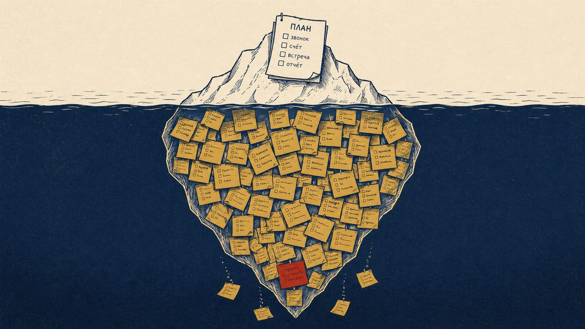
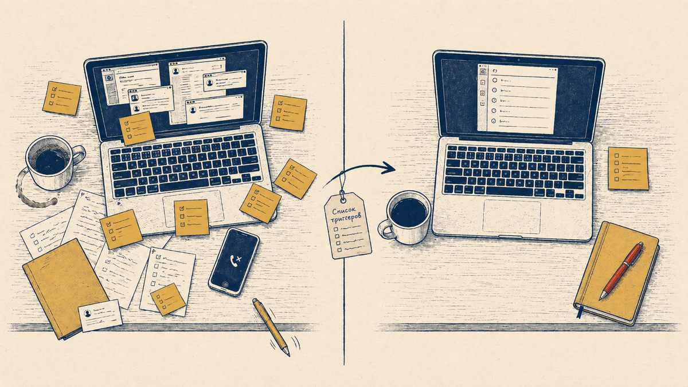

«Адам, где ты?» — спрашивает Бог.
Адам, разумеется, в раю, где ему и положено быть. Бог не нуждается в географической справке. Это первый и самый странный вопрос в истории управления: всезнающий руководитель спрашивает сотрудника о том, что и так знает.
Зачем?
Затем, что вопрос задан не Богу. Вопрос задан Адаму. Чтобы Адам сам остановился и сказал вслух, где он находится, что произошло, как он сюда попал. Это не контроль. Это инструмент саморефлексии, оформленный как диалог.
Чуть позже, в той же книге, появляется второй такой вопрос: «Каин, где брат твой Авель?». Опять вопрос, ответ на который Богу не нужен. Нужен он Каину. Чтобы тот хотя бы попытался посмотреть себе в глаза.
Тысячи лет спустя эти два вопроса вернулись в офисы под скромным названием «ежедневный план и отчёт».
Первый ритуал: «ты где?»
У моих менти этот ритуал внедрён уже давно и, что важно, успешно.
Утром каждый офисный сотрудник отправляет руководителю короткий план на день. Не диссертацию, не сетевой график, не «дорожную карту трансформации». Пять минут максимум. Что я планирую сегодня сделать, что считаю главным, где есть зависимости.
Вечером отправляется такой же короткий отчёт. Что сделал, что не сделал, что помешало. И, самое важное, какая помощь мне нужна.
Когда руководитель впервые слышит про этот ритуал, он почти всегда думает одно и то же: «отлично, наконец-то я буду знать, чем они там занимаются». И почти всегда ошибается.
Цель плана и отчёта не в контроле.
Цель в том, чтобы заставить сотрудника каждый день задавать себе те самые библейские вопросы. Где я? Что я сегодня делаю? Что я сделал, а что нет, и почему? Что у меня застряло, и кому я об этом не сказал?
Руководитель здесь играет роль не надзирателя, а зеркала. Он не нуждается в этом тексте, чтобы понять, чем сотрудник занимается. Это и так видно по результатам. Текст нужен сотруднику, чтобы тот раз в день остановился и посмотрел сам на себя.
Это работает, и работает хорошо.
Через пару недель сотрудники сами признаются: первый раз в жизни они начали понимать, куда у них уходит день. Через пару месяцев они уже не могут представить, как раньше работали без этого ритуала. Через полгода становится видно то, чего раньше никто не видел: где работа реально стоит, а где она просто «идёт».
Это обязательная гигиена. Я считаю, что любой офисный сотрудник должен делать её каждый день, без исключений.
Но у этого ритуала есть свой потолок.
Чего не видит план

План показывает то, что человек уже помнит.
А проблема компании чаще всего не в том, что люди не умеют записывать очевидное. Проблема в том, что половина важного вообще не попадает в поле внимания.
Задача висит где-то в переписке. Обещание было дано на бегу. Клиенту сказали: «я уточню и вернусь». Руководитель попросил «глянуть при случае». Коллега ждёт ответ. В CRM что-то не обновлено. Документ надо поправить. Встречу надо назначить. Поставщика надо дожать. И всё это не выглядит как большая задача, пока не взрывается.
А потом начинается классический корпоративный театр.
«Я думал, это не срочно».
«Я ждал ответа».
«Мне никто не напомнил».
«Мы же это обсуждали».
«А где это было написано?»
И где-то в этот момент на сцену выходит древний демон управленческого хаоса по имени «ну я же держал это в голове».
Держал недолго. Потом голова решила, что у неё есть дела поинтереснее.
План этого демона не ловит. Сотрудник честно записал утром то, что вспомнил, а вспомнил он процентов сорок от того, что на нём реально висит. Остальные шестьдесят процентов работают по своей внутренней программе: всплывают в три часа ночи, в душе, по дороге с обеда, после звонка возмущённого клиента и в любые другие моменты, когда от них уже мало проку.
Поэтому сегодня я хочу рассказать про второй ритуал.
Он не для всех, но для многих он меняет рабочую жизнь.
Второй ритуал: спусковые крючки
Спусковой крючок, или trigger list, это не список задач.
Это список вопросов. Очень похожий по жанру на «Адам, где ты?», только заточенный под рабочий день.
Сотрудник открывает список и по каждому пункту спрашивает себя: есть ли у меня что-то по этой теме?
Не «что я сегодня должен сделать», а шире:
- Что я вспомнил?
- Кому я что-то обещал?
- От кого я жду ответ?
- Где у меня зависла задача?
- Что пора занести в CRM?
- Где есть риск, который пока ещё не стал пожаром?
- Что я откладываю, потому что оно неприятное?
Именно это отличает спусковой крючок от обычного плана. План работает с уже осознанным. Триггер-лист работает с полузабытым. А в компаниях, как показывает практика, именно полузабытое потом стоит дороже всего.
Если первый ритуал это вопрос «ты где?», то второй ритуал это уже целая ревизия карманов. Где я? Что у меня в правом кармане? А в левом? А та бумажка, которую я туда сунул в среду и забыл, она ещё там?
И времени на это уходит больше. Не пять минут, как у плана и отчёта, а минут пятнадцать в день: семь-восемь утром на проход по списку и столько же вечером на закрытие хвостов. На первый взгляд это кажется роскошью. На самом деле окупается с первого же раза, когда сотрудник вытаскивает из забытого угла головы какую-нибудь сделку, которую почти потерял.
Как это должно работать в фирме
Хорошая практика выглядит так.
У компании есть общий список спусковых крючков. Не священная скрижаль, не очередной «регламент имени никому не нужного отдела», а рабочий шаблон.
Потом для каждой роли делается своя версия.
У продавца одни крючки: лиды, клиенты, КП, звонки, оплаты, возражения, забытые обещания, зависшие сделки.
У логиста другие: доставки, статусы, переносы, водители, рекламации, недовозы, возвраты, склад, маршруты.
У руководителя отдела третьи: люди, задачи, узкие места, конфликты, контрольные точки, решения, которые он не принял, потому что удобно было сделать вид, что оно само рассосётся.
У проектного менеджера четвёртые: сроки, зависимости, блокеры, документы, согласования, риски, ожидания от других участников.
Дальше сотрудник использует этот список два раза в день.
Утром он открывает свой список, проходит по нему и актуализирует день. Что-то добавляет в план, который и так пишет в первом ритуале. Что-то ставит задачей в CRM, кому-то пишет, где-то фиксирует заметку. А где-то понимает, что надо не «помнить», а назначить конкретное действие.
Вечером он проходит по списку ещё раз. Но уже с другой целью: выгрузить остатки дня, зафиксировать хвосты, не унести рабочий мусор домой в голове и оставить себе материал для завтрашнего утра.
В этом месте важно не превратить практику в бюрократическую картошку, которую все чистят, но никто не ест. Вечерний проход не должен быть романом «Война и мир: версия отдела продаж». Он должен быть коротким:
- что сделал;
- что важно;
- что зависло;
- что требует решения;
- что завтра первым делом.
Всё. Остальное пусть остаётся литературоведам.
Почему это лучше, чем просто «быть внимательнее»
Потому что «быть внимательнее» это не управленческая технология.
Это пожелание из серии «работайте лучше», «продавайте больше», «не ошибайтесь», «думайте головой». Звучит красиво, но в реальности не создаёт ни процесса, ни привычки, ни проверяемого результата.
Спусковые крючки работают иначе. Они не требуют от человека быть гением самоорганизации. Они помогают ему вспомнить то, что он и так знает, но в нужный момент не достаёт из памяти.
Человек может быть ответственным, но перегруженным. Может быть умным, но уставшим. Может быть опытным, но при этом работать в хаосе из звонков, чатов, клиентов, задач, правок, вопросов и маленьких «на секундочку».
И если компания не создаёт внешнюю систему напоминания, она фактически говорит сотруднику: «держи всё в голове, а если не удержал, сам виноват».
Это управленчески удобно, но глупо.Потому что потом за эту глупость платит не только сотрудник, а вся компания: срывами сроков, потерянными клиентами, повторными работами, конфликтами и бесконечным ручным управлением.
Главный эффект: работа становится видимой

Внедрение спусковых крючков даёт компании очень важный побочный эффект: невидимая работа становится видимой.
До этого многие задачи существуют в виде устных обещаний, намерений, полуфраз, заметок в мессенджере и внутренних тревог сотрудника. Формально их нет, фактически они есть, и именно поэтому они опасны.
Когда сотрудник два раза в день проходит по списку крючков, он начинает вытаскивать эти элементы наружу.
Обещал клиенту отправить фото? Запиши. Ждёшь от производства срок? Поставь ожидание. Нужно обновить статус сделки? Обнови. Есть риск по доставке? Зафиксируй. Вспомнил идею по улучшению процесса? Не надо героически носить её в голове до следующего корпоративного озарения, запиши в отдельный список улучшений.
Компания постепенно перестаёт зависеть от памяти конкретных людей. А это, между прочим, один из признаков взросления бизнеса. Детская компания живёт на героях и памяти. Взрослая компания живёт на процессах, правилах и понятных точках контроля.
Герои тоже нужны, конечно. Но лучше, когда герой спасает мир не потому, что все забыли закрыть задачу в CRM.
Это не инструмент наказания
Есть одна тонкость, которую важно проговорить вслух.
Если внедрить спусковые крючки как инструмент контроля и наказания, люди очень быстро превратят их в имитацию. Будут открывать список, кивать, писать безопасные формулировки и делать вид, что всё под контролем.
То есть компания получит не культуру ясности, а культуру аккуратного вранья. На рынке таких культур и так дефицита нет.
Поэтому спусковые крючки надо вводить ровно так же, как первый ритуал. Не как «теперь мы будем вас ловить», а как способ разгрузить голову, уменьшить количество забытых обещаний, быстрее видеть риски и спокойнее работать.
Руководитель должен объяснить простую вещь: задача не в том, чтобы доказать, что сотрудник плохой. Задача в том, чтобы система не зависела от случайной памяти, настроения, усталости и количества сообщений в телефоне.
Тут, кстати, очень помогает первый ритуал. Если в компании уже прижились план и отчёт как инструмент саморефлексии, а не надзора, то и триггер-лист люди принимают спокойно. Они уже знают, что их не ловят, а разгружают.
Как внедрять без фанатизма
Начинать лучше не со всей компании сразу, а с одной-двух ролей, где цена забывания особенно высока:
- продавцы;
- логисты;
- руководители проектов;
- сервисная служба;
- руководители отделов.
Сначала берётся общий список. Потом команда адаптирует его под реальную работу. Не консультант в вакууме придумывает идеальную таблицу, а сотрудники вместе с руководителем формулируют свои крючки.
Это важно. Если список написан сверху канцелярским языком, его будут ненавидеть. Если он собран из реальной боли, им начнут пользоваться.
Дальше нужен простой ритм:
- утром 5–10 минут на проход по списку;
- вечером 5–10 минут на закрытие дня;
- раз в неделю короткое обсуждение: какие крючки работают, каких не хватает, какие лишние.
Через месяц список надо пересмотреть. Часть пунктов окажется бесполезной. Часть, наоборот, станет обязательной. Появятся новые крючки, привязанные к конкретной должности.
И вот тогда начнётся самое интересное: компания начнёт видеть не только забытые задачи, но и повторяющиеся системные провалы.
Если продавцы постоянно вспоминают про забытые КП, значит, проблема не в памяти продавцов, а в процессе обработки сделок.
Если логисты постоянно вспоминают про ручные уточнения статусов, значит, проблема не в логистах, а в информационном потоке.
Если руководители постоянно вспоминают про зависшие решения, значит, у компании не культура делегирования, а музей управленческих пробок.
Спусковые крючки в этом смысле работают как диагностика. Они показывают, где организация живёт на честном слове, липкой ленте и личном героизме.
Общий список спусковых крючков

Ниже базовый список, который можно адаптировать под любую должность.
1. Текущие проекты и задачи
- Какие проекты уже начаты?
- Где есть незавершённые действия?
- Что движется медленнее, чем должно?
- Где я давно не проверял статус?
- Что формально «в работе», но фактически стоит?
2. Проекты, которые надо начать
- Что уже пора запустить?
- Что обещали начать, но не начали?
- Где есть решение, но нет первого действия?
- Что ждёт только моего шага?
3. Проекты и идеи, которые хорошо бы начать
- Какие улучшения я заметил?
- Что можно упростить?
- Где мы регулярно теряем время?
- Что давно раздражает, но все привыкли?
- Какая идея может дать эффект, если её нормально оформить?
4. Обещания и договорённости
- Что я обещал руководителю?
- Что я обещал коллегам?
- Что я обещал подчинённым?
- Что я обещал клиентам?
- Что я обещал подрядчикам или партнёрам?
- Что я сказал «вернусь с ответом» и не вернулся?
- Что я пообещал себе, но не записал?
5. Клиенты и внешние контакты
- Кому нужно ответить?
- Кому нужно позвонить?
- Кому нужно отправить материалы?
- У кого зависло решение?
- Кого надо аккуратно дожать?
- Кто ждёт от нас срок, цену, фото, документ, подтверждение?
- Где клиент может быть недоволен, но пока молчит?
6. Коммуникации
- Какие письма требуют ответа?
- Какие сообщения в мессенджерах надо разобрать?
- Какие звонки надо сделать?
- Кому надо напомнить о себе?
- Кого надо предупредить заранее?
- Где нужна не переписка, а нормальный разговор голосом?
7. Встречи и совещания
- Какие встречи надо назначить?
- Какие встречи надо подтвердить?
- К каким встречам надо подготовиться?
- Какие встречи надо отменить или перенести?
- По каким встречам надо отправить итог?
- Какие решения после встречи надо превратить в задачи?
8. Документы
- Какие документы надо подготовить?
- Какие документы надо проверить?
- Какие документы надо согласовать?
- Какие документы надо отправить?
- Где нужна правка?
- Где нужна подпись?
- Где документ есть, но никто не понимает, какая следующая стадия?
9. CRM, учётные системы и базы
- Какие задачи надо занести в CRM?
- Какие статусы надо обновить?
- Какие комментарии надо добавить?
- Какие сделки, заявки или проекты висят без следующего шага?
- Где информация есть в голове, но её нет в системе?
- Какие файлы или данные надо прикрепить?
10. Ожидания от других
- От кого я жду ответ?
- От кого я жду документ?
- От кого я жду решение?
- От кого я жду оплату?
- От кого я жду согласование?
- Кому надо напомнить?
- Где ожидание уже стало риском?
11. Сроки и контрольные точки
- Какие сроки приближаются?
- Какие сроки уже под угрозой?
- Что надо проверить сегодня, чтобы завтра не тушить пожар?
- Где нет понятного дедлайна?
- Где дедлайн есть, но нет ответственного?
12. Риски и проблемы
- Что может сорваться?
- Где есть слабый сигнал проблемы?
- Что меня тревожит, но я пока не сформулировал?
- Где клиент может получить плохой опыт?
- Где мы можем потерять деньги?
- Где мы можем потерять доверие?
13. Ошибки, возвраты, рекламации, переделки
- Какие ошибки надо разобрать?
- Какие рекламации требуют движения?
- Где клиент ждёт ответа?
- Где нужна причина, а не просто исправление?
- Какая ошибка повторяется не первый раз?
- Что надо изменить в процессе, чтобы это не повторялось?
14. Деньги, оплаты, счета
- Какие счета надо выставить?
- Какие счета надо оплатить?
- Какие оплаты надо проверить?
- Какие долги надо напомнить?
- Где есть финансовое условие, которое надо уточнить?
- Где деньги зависят от моего действия?
15. Люди и команда
- Кому нужна помощь?
- Кому нужна обратная связь?
- Кто ждёт решения?
- Кто перегружен?
- Где есть конфликт или напряжение?
- Кого надо поблагодарить?
- Кого надо обучить?
16. Руководитель и управленческие решения
- Что я должен вынести руководителю?
- Где мне нужно решение сверху?
- Где я сам торможу решение?
- Что надо эскалировать?
- Что не стоит тащить наверх, а надо решить самому?
- Где я подменяю управление ожиданием чуда?
17. Подрядчики и партнёры
- Кто из подрядчиков должен дать ответ?
- Где надо проверить качество работы?
- Где надо уточнить срок?
- Где надо зафиксировать договорённости письменно?
- Кто регулярно срывает обязательства?
- С кем пора пересмотреть формат работы?
18. Инструменты, доступы, ресурсы
- Каких доступов не хватает?
- Какие инструменты мешают работать?
- Где нужна инструкция?
- Где нужна автоматизация?
- Где сотрудник делает руками то, что давно должна делать система?
19. Профессиональный рост
- Чему мне нужно научиться?
- Какого навыка мне не хватает в текущей роли?
- Где я постоянно ошибаюсь из-за нехватки знаний?
- У кого можно перенять опыт?
- Какую инструкцию, книгу, видео или внутреннее обучение стоит пройти?
20. Личная рабочая гигиена
- Что мешает мне работать спокойно?
- Где у меня завал в заметках, файлах, почте, CRM?
- Что надо разобрать, чтобы не терять время каждый день?
- Что я переношу изо дня в день?
- Что надо наконец закрыть, отменить или честно признать ненужным?
21. Профессиональный внешний вид и готовность к работе
- Что нужно привести в порядок для встреч с клиентами или партнёрами?
- Какие материалы должны быть под рукой?
- Готовы ли презентации, образцы, документы, ссылки?
- Не выгляжу ли я так, будто меня внезапно назначили ответственным за хаос?
Примеры адаптации под роли
Продавец
- Кому я обещал перезвонить?
- У какой сделки нет следующего шага?
- Кому нужно отправить КП?
- Кто получил КП, но не получил мой follow-up?
- Где клиент сомневается, а я не снял возражение?
- Какие сделки зависли без причины?
- Какие клиенты могут купить повторно?
Логист
- Какие доставки сегодня под риском?
- Где надо подтвердить время?
- Кому надо сообщить перенос?
- Где водитель, склад, клиент или сборщик ждут информацию?
- Какие возвраты или недовозы не закрыты?
- Где статус в системе не соответствует реальности?
Руководитель отдела
- Какие решения от меня ждут?
- Какие задачи у сотрудников зависли?
- Кто перегружен?
- Где нужен разговор один на один?
- Где конфликт ещё маленький, но уже пахнет дымом?
- Какие показатели требуют внимания?
- Что я сам не делегирую, хотя давно пора?
Сервисная служба
- Какие обращения клиентов не закрыты?
- Где клиент ждёт ответ больше нормы?
- Какие рекламации повторяются?
- Где надо не просто решить вопрос, а восстановить доверие?
- Что надо передать в производство, продажи или логистику?
- Где нет понятного ответственного?
Список не пишется в вакууме

Самое опасное в этой истории это взять любой готовый шаблон, в том числе тот, что я привёл выше, распечатать его и раздать сотрудникам со словами: «теперь работаем по-новому». Через неделю стопка будет валяться где-то между принтером и кофемашиной. Через две про неё забудут. Через месяц кто-нибудь обязательно скажет: «мы пробовали эти ваши крючки, у нас не сработало».
Ещё бы они сработали.
Шаблон это не инструмент, а заготовка. Инструментом он становится, когда его собирают под конкретные роли в конкретной компании, с конкретными процессами и конкретными людьми, у которых одно регулярно проваливается, а другое не проваливается никогда.
Список крючков для продавца мебельной фабрики и для продавца IT-сервиса — это два разных документа. То же самое со списком для логиста, который возит крупногабарит, и для логиста, который работает с маркетплейсом. Список начала дня и список конца дня тоже делаются раздельно, потому что у утра и вечера разные задачи: утром поднять то, что важно сегодня, вечером закрыть хвосты и не унести их домой.
Поэтому крючки имеет смысл разрабатывать не из головы и не из интернета, а из реальной работы. Сесть с руководителем и сотрудниками. Вытащить из них живые ситуации, в которых что-то регулярно проваливается. Превратить эти ситуации в вопросы. Прожить с этим списком месяц. Потом подрезать лишнее и добавить недостающее.
На выходе получится рабочий инструмент под конкретную роль, а не музейный экспонат с табличкой «у нас тоже это было».
Я этим занимаюсь. Собираю такие списки начала и конца дня под роли в конкретных компаниях. Если для вашей фирмы это актуально, можно написать мне. Получится дешевле, чем в очередной раз разбирать последствия фразы «я думал, это не срочно».
Финальная мысль
Два ритуала, о которых я рассказал, на самом деле очень похожи. Оба про то, чтобы человек хотя бы раз в день остановился и посмотрел сам на себя.
Первый короткий: пять минут утром, пять минут вечером. План и отчёт. «Где я? Что я делаю? Что я сделал?» Те самые библейские вопросы, которые работают уже несколько тысяч лет, потому что устроены безошибочно: они нужны не Богу, а тому, кто на них отвечает.
Второй подлиннее: минут пятнадцать в день. Триггер-лист. Не один вопрос, а целый перечень, чтобы выгрести из памяти не только то, что лежит сверху, но и то, что прилипло к стенкам.
И тот, и другой ритуал нужны не для того, чтобы сотрудники писали больше отчётов.
Они нужны для другого. Чтобы компания меньше зависела от памяти. Чтобы обещания не растворялись в чатах. Чтобы планы строились не только из того, что случайно всплыло утром в голове. Чтобы руководитель видел не только результат, но и место, где работа начинает застревать. И чтобы каждый сотрудник постепенно привыкал к простой взрослой мысли: если дело важно, оно не должно жить только в голове.
Голова нужна для мышления.
А для хранения задач человечество уже придумало более надёжные места. Хотя, судя по многим компаниям, новость пока дошла не до всех.